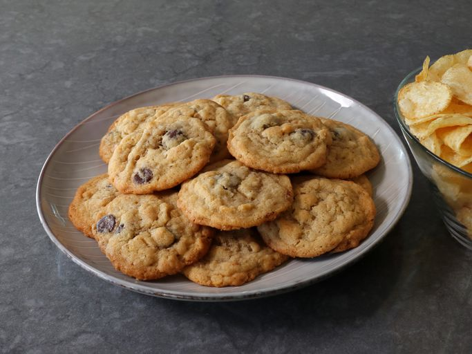

Potato Chip Cookies

Description
This is a recipe that takes a regular old chocolate chip cookie and adds
crushed potato chips into the batter. These chips are determined on personal
preference. For this demonstration we will be using just basic sea salt chips
that you can find at any store! The potato chips don’t stay crispy, but they
do stay sort of crunchy, which makes these one of the most addictive cookies
I’ve ever eaten. So, if you enjoy chocolate chip cookies, and want to enjoy
them like you’ve never enjoyed them before, I hope you give these a try soon.
Enjoy!
Ingrediants
- 2 1/4 cups all-purpose flour
- 1 teaspoon baking soda
- 1/2 teaspoon salt
- 1 cup very soft unsalted butter (2 sticks)
- 1 cup white sugar
- 1/2 cup light brown sugar
- 1 large egg
- 2 tablespoons milk
- 1 teaspoon pure vanilla extract
- 2 cups lightly crushed potato chips
- 1 cup dark chocolate chips
Steps
- 1. Whisk flour, baking soda, and salt together in a bowl; set aside.
- 2. Beat butter, white sugar, and brown sugar together with an electric
mixer until light and fluffy. Add egg and mix until fully incorporated and
the mixture is smooth. Add milk and vanilla and repeat.
- 3. Stir potato chips and chocolate chips in with a spatula until just
combined. Add flour mixture; continue mixing in with a spatula until flour
disappears and dough comes together.
- 4. Wrap and chill dough for about 30 minutes, or until ready to bake.
Dough can be used immediately if desired.
- 5. Preheat the oven to 375 degrees F (190 degrees C). Line baking sheets
with parchment.
- 6. Scoop dough by rounded tablespoons onto the prepared baking sheet.
Space evenly, as dough will spread when baked.
- 7. Bake in the preheated oven until outside edges of cookies are lightly
browned, about 12 minutes. Cool on the pan for about 5 minutes, before
removing cookies to a wire rack to cool completely. For best results, let
cool completely before serving.